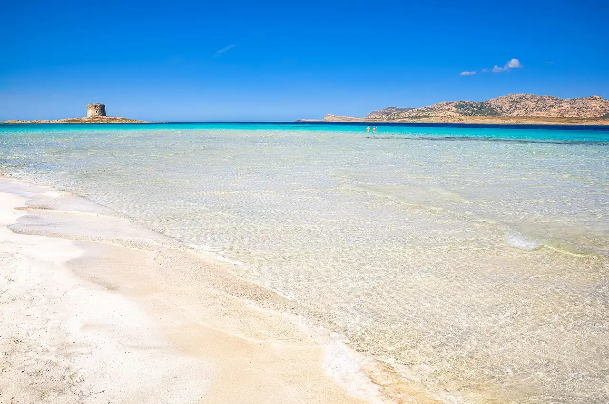

La Pelosa
Stintino, Sardaigne, Italie · baignade, snorkeling

Plage de sable très fin face à l’îlot de la Pelosa et sa tour aragonaise, à la pointe nord-ouest de la Sardaigne. L’eau peu profonde et turquoise en fait une plage familiale, protégée par des règles strictes.
- Lieu
- Stintino, Sardaigne, Italie
- Niveau
- Débutant
- Activités
- baignade, snorkeling
- Type d'eau
- Mer / océan
- Coordonnées
- 40.97, 8.21 (position approximative du secteur)
Dangers à connaître
- Par mistral, courant et clapot se lèvent vite vers l’îlot.
- Passage de bateaux au-delà de la zone de baignade balisée.
Le conseil d'Ocean Buddy
En été, l’accès est limité et payant sur réservation : réserve avant d’y aller et prends une natte, la serviette posée directement sur le sable est interdite.
Ouvrir dans Ocean Buddy Télécharger sur l'App Store
Source : Fiche Ocean Buddy · septembre 2026 · à vérifier localement.